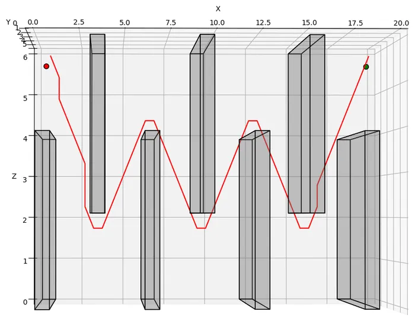
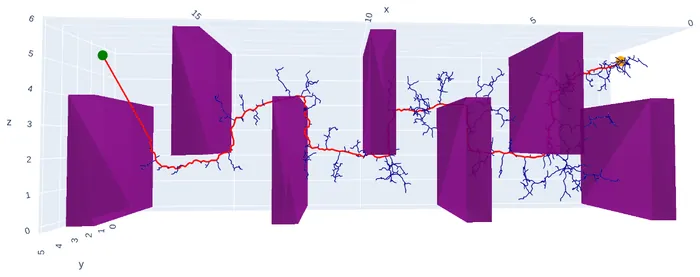
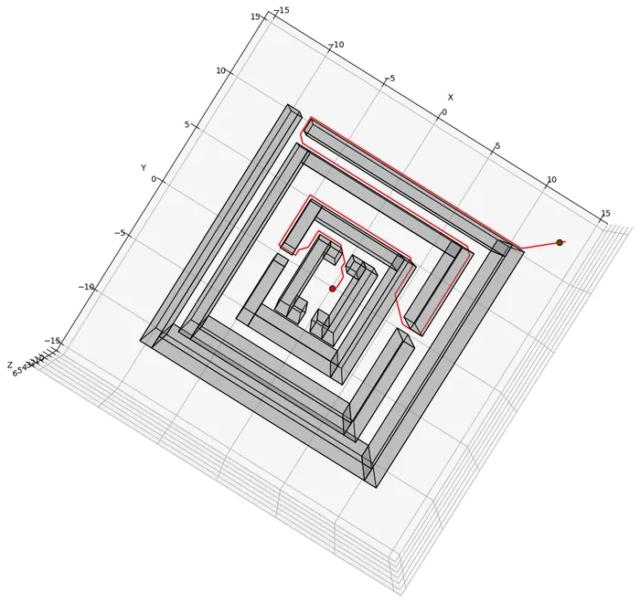
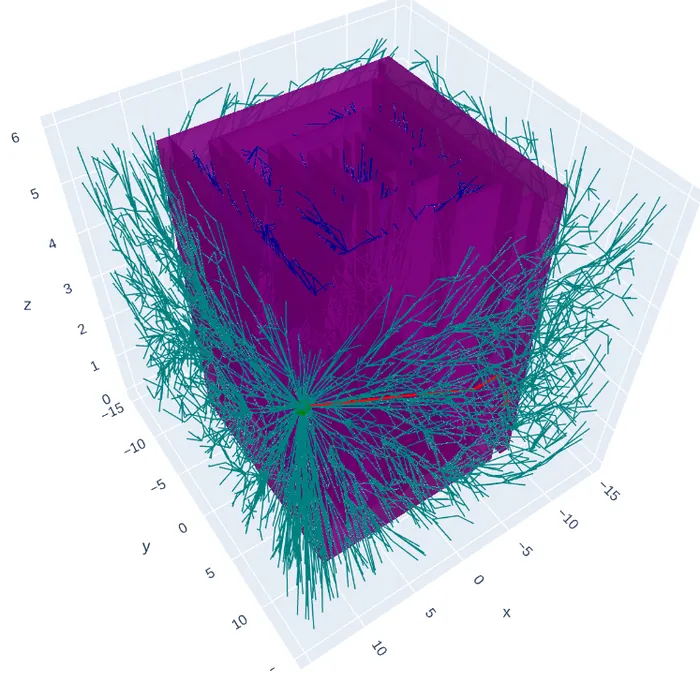

01 / Problem
Find a short, collision-free path through 3D clutter.
Each environment is a box-shaped workspace filled with axis-aligned box obstacles: a single cube, a maze, a “flappy bird” course of gaps, the Monza track, a window, a tower and a room. Given a start and a goal, the planner must return a path for a point robot that never touches an obstacle, and keep it short.
02 / Search
Weighted A* over 26 neighbours.
I discretised the workspace into 0.5 m cells and searched it with A*, expanding each cell to its 26 neighbours (faces, edges and corners) at their true Euclidean cost. The heuristic is straight-line distance to the goal, inflated by a weight ε = 1.2 so the search commits towards the goal sooner; with ε above 1 the path can be up to ε times longer than the best grid path, in exchange for expanding fewer cells.
- Cells are created lazily in a dictionary as the search reaches them, so the grid is never built in full.
- The open list is a priority queue keyed on
g + ε·h; closed cells are never reopened. - The search stops within one cell of the goal and walks parent pointers back to the start.
03 / Collision checking
Check every edge, not just every cell.
A cell centre can be free while the straight line to its neighbour clips the corner of a box. So every edge A* considers is tested against every obstacle with the slab method: intersect the segment with each pair of parallel faces, keep the latest entry and earliest exit, and reject the edge if the segment is inside the box for any stretch of it. The returned path is then re-checked segment by segment in continuous space.
04 / Results
Shorter than RRT; RRT* catches up on the hardest maps.
For comparison I ran sampling-based planners from the rrt-algorithms library on the same maps, wired to the same environment: plain RRT where it found a path in reasonable time, and bidirectional RRT* on the maze, Monza and room, where it did not.




- Against plain RRT, A* was never longer: equal on the single cube and 7–29% shorter on the other three, because RRT accepts the first path its random tree finds.
- RRT* matched or beat A* on the maze and the room. RRT* keeps rewiring its tree towards straight lines, while A*’s paths can only turn in 26 grid directions, so they zig-zag slightly where the true shortest path runs diagonally.
05 / Limits
Representation shapes the answer.
- A coarse grid can close off narrow passages; a fine one multiplies the search. 0.5 m worked for all seven maps.
- The robot is a point. A real vehicle needs its footprint and kinematics in the planner.
- Sampling planners are random; a fair comparison would report many seeded runs, with runtime as well as length.